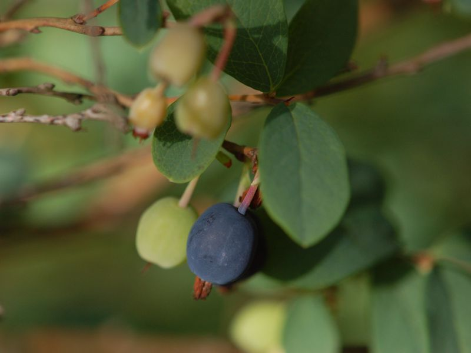

Rauschbeere
Vaccinium uliginosa
Ein kniehoher, winterkahler Strauch mit oben blaugrünen, unten hellgrauen Blättern und rosafarbenen Blüten. Das Fruchtfleisch der blau bereiften Beeren ist - im Gegensatz zu den HeidelBeeren - farblos. RauschBeeren sind essbar, jedoch fad im Geschmack. Der Verzehr soll rauschartige Zustände auslösen, wobei der Nachweis von Giftstoffen bisher nicht gelungen ist. Möglicherweise wird die Wirkung erst durch Pilzbefall verursacht.
Besondere Bedeutung erhält der Strauch als Futterpflanze für die Raupen des Hochmoorgelblings (Colias palaeno).